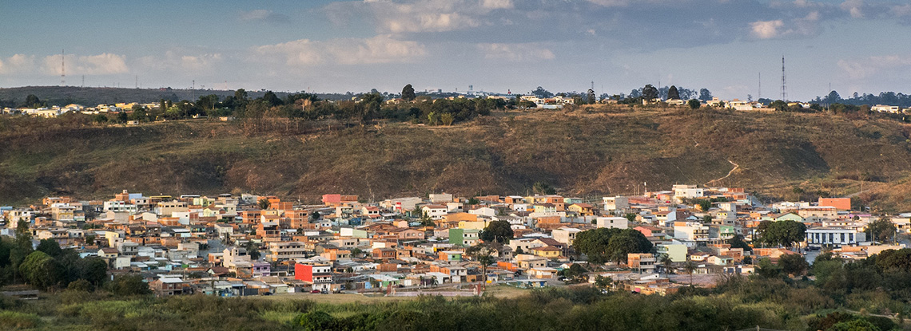

Sobre o Varjão Digital
Conheça nossa missão e história
Nossa Missão
O Varjão Digital foi criado em 2025 para conectar moradores e visitantes aos comércios locais do bairro Varjão em Brasília. Nosso objetivo é fortalecer a economia local e facilitar o acesso a produtos e serviços.
Nossa História
Nascemos de um projeto comunitário que identificou a necessidade de um diretório digital atualizado dos estabelecimentos da região. Hoje, somos a principal plataforma de divulgação do comércio local.
Números
50+
Comércios cadastrados
5
Categorias de serviços
100%
Gratuito para usuários
